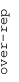
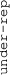

These results are also available as PDF and EPS documents.
Depending on your display resolution, scrolling or zooming may be necessary.
|  |
| 3 |
| 0 |
| -3 |
|  |
| GO_HOMOPHILIC_CELL_ADHESION_VIA_PLASMA_MEMBRANE_ADHESION_MOLECULES GO_HOMOPHILIC_CELL_ADHESION_VIA_PLASMA_MEMBRANE_ADHESION_MOLECULES | |||||||||||
| GO_I_BAND GO_I_BAND | |||||||||||
| GO_NEGATIVE_CHEMOTAXIS GO_NEGATIVE_CHEMOTAXIS | |||||||||||
| GO_EXTRACELLULAR_MATRIX_STRUCTURAL_CONSTITUENT GO_EXTRACELLULAR_MATRIX_STRUCTURAL_CONSTITUENT | |||||||||||
| GO_DOPAMINE_TRANSPORT GO_DOPAMINE_TRANSPORT | |||||||||||
| GO_CONNEXIN_COMPLEX GO_CONNEXIN_COMPLEX | |||||||||||
| GO_REGULATION_OF_ACUTE_INFLAMMATORY_RESPONSE GO_REGULATION_OF_ACUTE_INFLAMMATORY_RESPONSE | |||||||||||
| GO_CELLULAR_RESPONSE_TO_AMYLOID_BETA GO_CELLULAR_RESPONSE_TO_AMYLOID_BETA | |||||||||||
| GO_REGULATION_OF_MEIOTIC_CELL_CYCLE GO_REGULATION_OF_MEIOTIC_CELL_CYCLE | |||||||||||
| GO_EXCITATORY_SYNAPSE GO_EXCITATORY_SYNAPSE | |||||||||||
| GO_ANION_CHANNEL_ACTIVITY GO_ANION_CHANNEL_ACTIVITY | |||||||||||
| GO_REGULATION_OF_MACROPHAGE_MIGRATION GO_REGULATION_OF_MACROPHAGE_MIGRATION | |||||||||||
| GO_HSP90_PROTEIN_BINDING GO_HSP90_PROTEIN_BINDING | |||||||||||
| GO_CHROMOSOME_CENTROMERIC_REGION GO_CHROMOSOME_CENTROMERIC_REGION | |||||||||||
| GO_FOLIC_ACID_CONTAINING_COMPOUND_BIOSYNTHETIC_PROCESS GO_FOLIC_ACID_CONTAINING_COMPOUND_BIOSYNTHETIC_PROCESS | |||||||||||
| GO_ACTIVATION_INDUCED_CELL_DEATH_OF_T_CELLS GO_ACTIVATION_INDUCED_CELL_DEATH_OF_T_CELLS | |||||||||||
| GO_OXIDATIVE_PHOSPHORYLATION GO_OXIDATIVE_PHOSPHORYLATION | |||||||||||
| GO_PROTEIN_TARGETING_TO_MITOCHONDRION GO_PROTEIN_TARGETING_TO_MITOCHONDRION | |||||||||||
| GO_NUCLEOSOME_BINDING GO_NUCLEOSOME_BINDING | |||||||||||
| GO_REGULATION_OF_PROTEIN_LOCALIZATION_TO_CHROMOSOME_TELOMERIC_REGION GO_REGULATION_OF_PROTEIN_LOCALIZATION_TO_CHROMOSOME_TELOMERIC_REGION | |||||||||||
| GO_FICOLIN_1_RICH_GRANULE GO_FICOLIN_1_RICH_GRANULE | |||||||||||
| GO_NCRNA_TRANSCRIPTION GO_NCRNA_TRANSCRIPTION | |||||||||||
| GO_ERAD_PATHWAY GO_ERAD_PATHWAY | |||||||||||
| GO_OXIDOREDUCTASE_ACTIVITY_ACTING_ON_A_SULFUR_GROUP_OF_DONORS GO_OXIDOREDUCTASE_ACTIVITY_ACTING_ON_A_SULFUR_GROUP_OF_DONORS | |||||||||||
| GO_TRNA_METABOLIC_PROCESS GO_TRNA_METABOLIC_PROCESS | |||||||||||
| GO_PROTEIN_ACETYLTRANSFERASE_COMPLEX GO_PROTEIN_ACETYLTRANSFERASE_COMPLEX | |||||||||||
| GO_SPLICEOSOMAL_COMPLEX GO_SPLICEOSOMAL_COMPLEX | |||||||||||
| GO_CYTOSOLIC_TRANSPORT GO_CYTOSOLIC_TRANSPORT | |||||||||||
| GO_PYRIMIDINE_NUCLEOTIDE_SUGAR_TRANSMEMBRANE_TRANSPORT GO_PYRIMIDINE_NUCLEOTIDE_SUGAR_TRANSMEMBRANE_TRANSPORT | |||||||||||
| GO_GOLGI_LOCALIZATION GO_GOLGI_LOCALIZATION | |||||||||||
| GO_RNA_BINDING_INVOLVED_IN_POSTTRANSCRIPTIONAL_GENE_SILENCING GO_RNA_BINDING_INVOLVED_IN_POSTTRANSCRIPTIONAL_GENE_SILENCING | |||||||||||
| GO_ODORANT_BINDING GO_ODORANT_BINDING | |||||||||||
| GO_KERATIN_FILAMENT GO_KERATIN_FILAMENT | |||||||||||
| GO_TYPE_I_INTERFERON_RECEPTOR_BINDING GO_TYPE_I_INTERFERON_RECEPTOR_BINDING | |||||||||||
| GO_HORMONE_ACTIVITY GO_HORMONE_ACTIVITY | |||||||||||
| GO_ANTIMICROBIAL_HUMORAL_RESPONSE GO_ANTIMICROBIAL_HUMORAL_RESPONSE | |||||||||||
| GO_DETECTION_OF_CHEMICAL_STIMULUS_INVOLVED_IN_SENSORY_PERCEPTION_OF_TASTE GO_DETECTION_OF_CHEMICAL_STIMULUS_INVOLVED_IN_SENSORY_PERCEPTION_OF_TASTE | |||||||||||
| GO_STRUCTURAL_CONSTITUENT_OF_EYE_LENS GO_STRUCTURAL_CONSTITUENT_OF_EYE_LENS | |||||||||||
| GO_PEPTIDE_RECEPTOR_ACTIVITY GO_PEPTIDE_RECEPTOR_ACTIVITY | |||||||||||
| GO_GONADAL_MESODERM_DEVELOPMENT GO_GONADAL_MESODERM_DEVELOPMENT | |||||||||||
| GO_RIBOSOMAL_SUBUNIT GO_RIBOSOMAL_SUBUNIT | |||||||||||
| GO_TRANSLATION_FACTOR_ACTIVITY_RNA_BINDING GO_TRANSLATION_FACTOR_ACTIVITY_RNA_BINDING | |||||||||||
| GO_MYELOID_CELL_HOMEOSTASIS GO_MYELOID_CELL_HOMEOSTASIS | |||||||||||
| GO_MICROBODY_LUMEN GO_MICROBODY_LUMEN | |||||||||||
| GO_REGULATION_OF_PROTEIN_LOCALIZATION_TO_NUCLEOLUS GO_REGULATION_OF_PROTEIN_LOCALIZATION_TO_NUCLEOLUS | |||||||||||
| GO_HISTONE_DEMETHYLASE_ACTIVITY_H3_K4_SPECIFIC GO_HISTONE_DEMETHYLASE_ACTIVITY_H3_K4_SPECIFIC | |||||||||||
| GO_DNA_INTEGRITY_CHECKPOINT GO_DNA_INTEGRITY_CHECKPOINT | |||||||||||
| GO_PRERIBOSOME GO_PRERIBOSOME | |||||||||||
| GO_NUCLEOTIDE_EXCISION_REPAIR_DNA_INCISION GO_NUCLEOTIDE_EXCISION_REPAIR_DNA_INCISION | |||||||||||
| GO_N_METHYLTRANSFERASE_ACTIVITY GO_N_METHYLTRANSFERASE_ACTIVITY | |||||||||||
| GO_CELLULAR_RESPONSE_TO_GLUCOSE_STARVATION GO_CELLULAR_RESPONSE_TO_GLUCOSE_STARVATION | |||||||||||
| GO_RUFFLE GO_RUFFLE | |||||||||||
| GO_LIPID_PHOSPHORYLATION GO_LIPID_PHOSPHORYLATION | |||||||||||
| GO_CILIARY_BASAL_BODY GO_CILIARY_BASAL_BODY | |||||||||||
| GO_L_ASPARTATE_TRANSMEMBRANE_TRANSPORT GO_L_ASPARTATE_TRANSMEMBRANE_TRANSPORT | |||||||||||
| GO_PYRIMIDINE_NUCLEOBASE_BIOSYNTHETIC_PROCESS GO_PYRIMIDINE_NUCLEOBASE_BIOSYNTHETIC_PROCESS | |||||||||||
| GO_CELL_PROLIFERATION_IN_HINDBRAIN GO_CELL_PROLIFERATION_IN_HINDBRAIN | |||||||||||
| GO_POTASSIUM_ION_TRANSMEMBRANE_TRANSPORTER_ACTIVITY GO_POTASSIUM_ION_TRANSMEMBRANE_TRANSPORTER_ACTIVITY | |||||||||||
| GO_ANCHORED_COMPONENT_OF_MEMBRANE GO_ANCHORED_COMPONENT_OF_MEMBRANE | |||||||||||
| GO_REGULATION_OF_WATER_LOSS_VIA_SKIN GO_REGULATION_OF_WATER_LOSS_VIA_SKIN | |||||||||||
| GO_AXONEMAL_DYNEIN_COMPLEX_ASSEMBLY GO_AXONEMAL_DYNEIN_COMPLEX_ASSEMBLY |